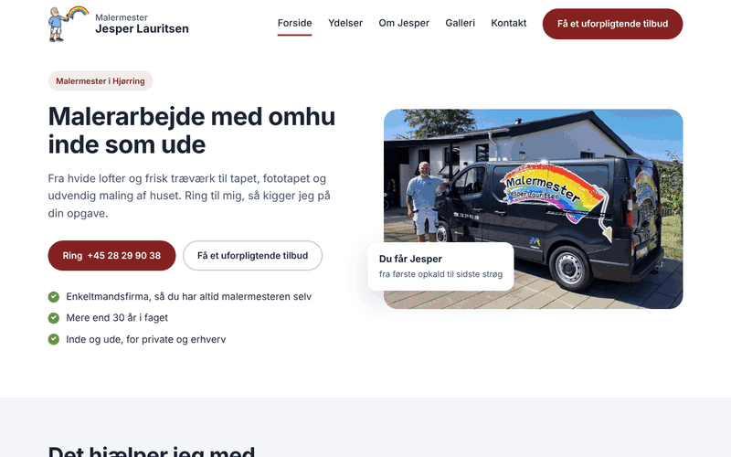
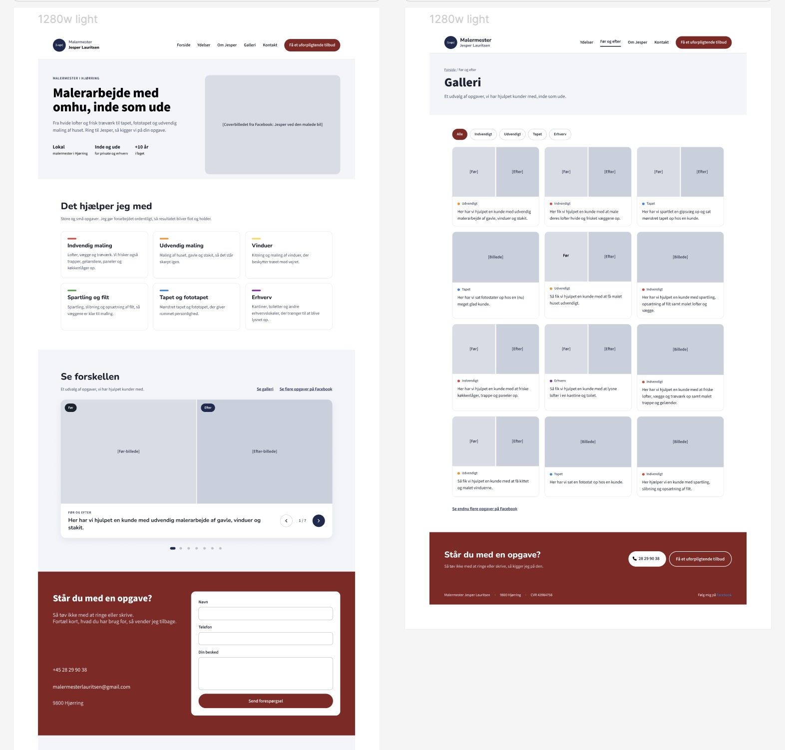
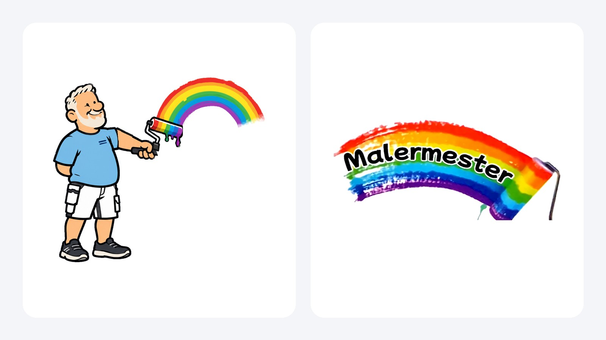
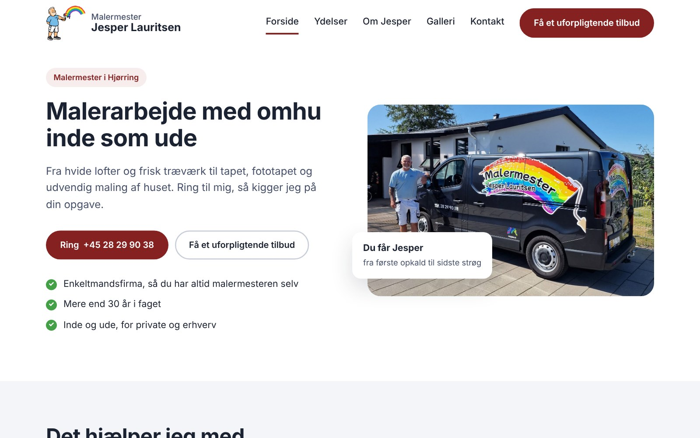
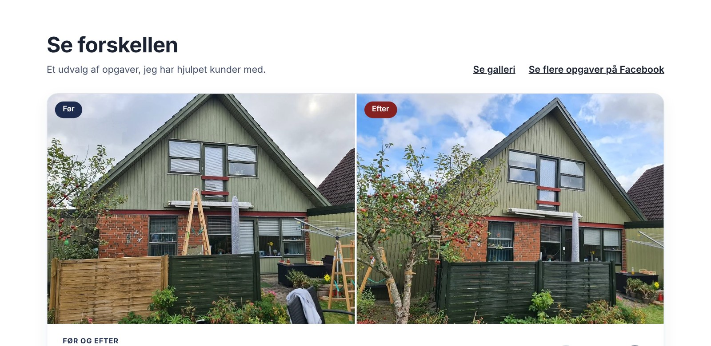
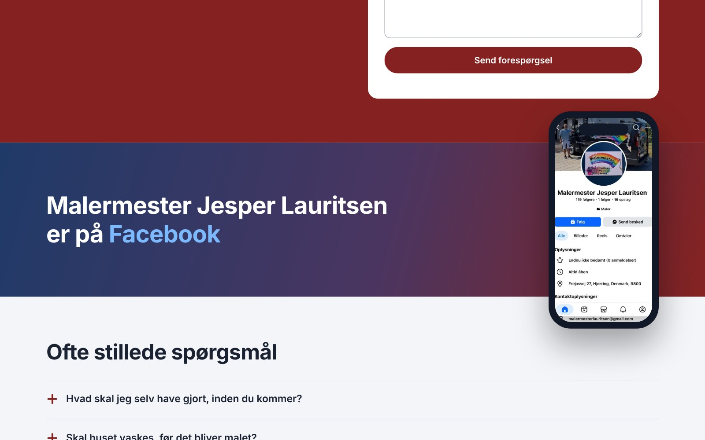
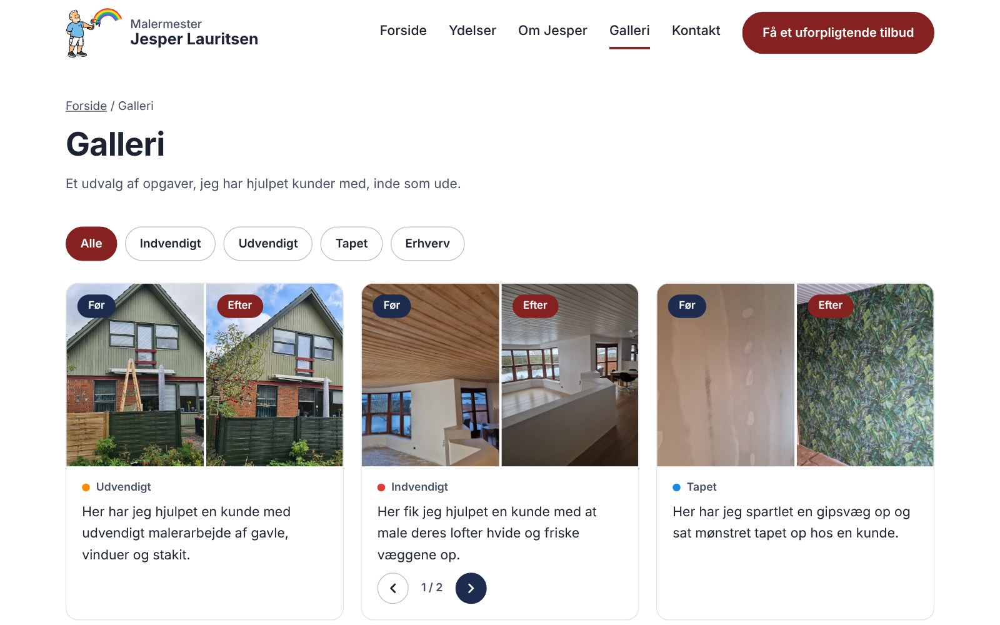
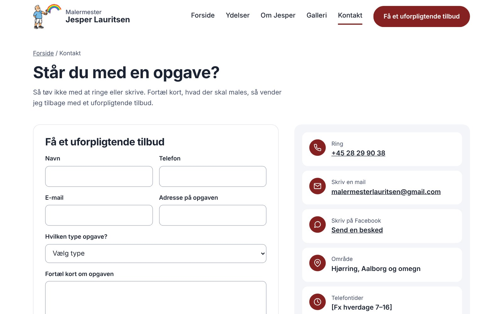
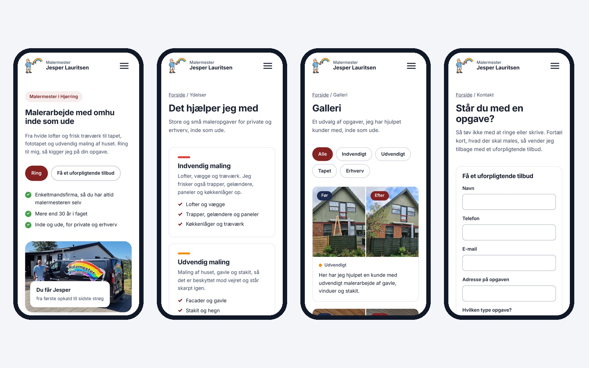

A complete website and visual identity for a one-man painting business in Hjørring that until now only had a Facebook page. I owned the project end to end: understanding the client's needs, designing the logo and pages in Figma, building the site, and refining it through feedback rounds until launch. The result is a fast, professional website that makes it easy to call or request a quote, on phone and desktop alike.

The painter gets most of his customers through word of mouth and Facebook. His posts showed great before and after photos, but there was no clear way for new customers to find his services or ask for a quote. The goal was a trustworthy website that presents his work, explains what he offers, and turns visitors into enquiries.
I started with a meeting to understand his business, his customers and how he wanted to come across. From there I designed the logo and page layouts in Figma and presented them before writing any code.
Throughout the project I sent him new versions as the site took shape, and we held sparring meetings where he could point out what worked and what did not. Each round of feedback went straight into the next version, from wording and photo choices to small layout details on the phone. That kept him involved in every decision and meant there were no surprises at launch.

I designed both logos: an illustrated figure of the painter holding a roller that paints a rainbow, and a rainbow wordmark with the text "Malermester". The rainbow colours run through the whole site, as accent stripes on the service cards and in the gallery categories, so the brand feels consistent everywhere.

The client wanted a professional result without monthly fees, so I chose a static site built in plain HTML, CSS and JavaScript and deployed on Cloudflare Pages. It loads quickly, has nothing that needs security updates, and deploys automatically every time a change is pushed to GitHub. The contact form uses a form service, so enquiries land directly in his inbox without a server to maintain.
I also designed the site to be easy to keep up to date. All gallery and carousel content lives in a single data file, so adding a new project means dropping the photos in a folder and adding a few lines.





Many of his customers find him on their phone, so every page was tested and adjusted on both small and large screens. On the phone the layout is simplified: buttons sit side by side so calling is one tap away, headings and text are scaled down, contact details get icons, and shortcuts the user does not need are hidden. On desktop the extra space is used for larger photos and a more visual layout.
